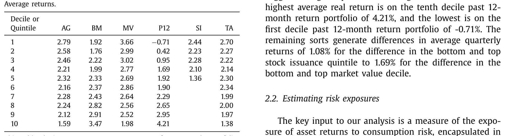
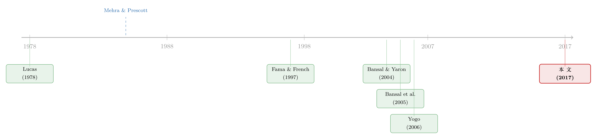

理论最美、却没人用的模型：把「消费风险」反推回每一家公司
本文读的是 Dittmar & Lundblad (2017, Journal of Financial Economics)：消费基础模型 (consumption-based asset pricing) 在公司层面「测不准」是出了名的，于是作者绕了一个弯——先在组合层面把消费风险暴露量准，再把这些暴露映射到形成组合的公司特征上，最后用这张「特征→beta」的地图，给每一家公司、每一个行业反推出一个随时间变化的消费风险暴露与资本成本。一个只含「消费增长创新」这一个因子的简单模型，竟能解释 55 个异象组合近三分之二（R̄² = 64.11%）的横截面平均收益差异。
1 引言：一个「理论上完美、实践中没人用」的模型
先讲一个有点尴尬的事实。
在资产定价的教科书里，最干净、最有经济学血统的模型，是消费基础模型。它的逻辑朴素得近乎优雅：一项资产的风险，不在于它自己抖得有多厉害，而在于它在你「最缺钱、最想消费却消费不起」的时候——也就是衰退里——会不会跟着一起跌。用 Lucas (1978) 与 Breeden (1979) 的话说，资产的风险溢价，由它的收益与代表性投资者跨期边际替代率 (intertemporal marginal rate of substitution, IMRS) 的条件协方差决定。说人话：和消费一起崩的资产，必须给你更高的预期收益作为补偿。
这套故事如此自洽，以至于你会以为华尔街早就拿它来给项目、给行业、给公司算资本成本了。
可现实恰恰相反。真正在用的，还是资本资产定价模型 (Capital Asset Pricing Model, CAPM)，或者 Fama and French (1993)、Carhart (1997) 那一类「统计因子」模型。这就奇怪了：CAPM 在 Fama and French (1992) 那里早已被宣判实证失败，而那些因子模型与经济学理论之间没有一根直接的绳子。一个理论上更对的模型被束之高阁，一群理论上没根的模型却被天天使用。
为什么？
作者的诊断一针见血：不是模型错了，是消费风险暴露太难测了，尤其是在公司这个最需要它的颗粒度上。消费数据只有低频（季度）观测，而真正驱动宏观风险的衰退又屈指可数；想直接估一家公司收益对消费增长的暴露，信号会被噪声彻底淹没。这一点 Fama and French (1997) 在估「行业资本成本」时就栽过跟头——他们发现行业特有方差相对系统方差太高，risk exposure 估得极不精确，还会随时间漂移；并断言如果行业层面都这么糟，公司层面只会更糟。
于是张力就立住了：我们手里有一个理论上最该用、却在实践中最没法用的模型。这篇论文要做的，就是把它从「漂亮的摆设」变回「能用的工具」。
2 识别策略：不直接量，而是「绕道」
2.1 先把定价方程摆出来
模型的骨架，就是那条横截面定价关系。任何资产 i 的风险溢价，可以写成它的消费 beta 乘以消费风险的市场价格：
$$E\!\left[R_{i,t+1} - R_{f,t}\right] = \lambda\,\beta_i,\qquad \beta_i = \frac{\mathrm{Cov}\!\left(r_{i,t+1},\,\eta_{t+1}\right)}{\mathrm{Var}\!\left(\eta_{t+1}\right)}$$
这里 η_{t+1} 是消费增长的意外冲击（innovation）——本期实际消费增长减去它的无条件均值；λ 是消费增长风险的市场价格。横截面里收益差异的全部来源，理论上就压缩在这一个 β_i 里。
问题也正出在这个 β_i 上：在单期、当期协方差的意义下去估它，几乎estimate不出什么名堂。这就是上文说的「测不准」。
2.2 真正关键的一步：把频率「拉低」
接着，一个自然的问题是——既然单期测不准，能不能换个频率？
作者承接 Bansal et al. (2005) 的核心洞见：消费风险是一种低频现象。衰退缓慢展开、消费缓慢调整，资产对它的暴露要在更长的时间窗口里累加，才看得清楚。于是他们不去回归单期收益，而是把 K 个季度的收益累加起来，回归到同样累加 K 个季度的消费增长创新上：
这一步看似只是技术处理，却是整篇论文的命门。它和标准消费 CAPM 的区别，全在那个窗口 K 上：K = 1 就退化回「当期协方差」的传统 CCAPM；K > 1 时，低频共动开始显形。作者最终选定 K = 4（一年），因为它给出最好的横截面拟合。（关于「风险暴露其实是时变的、需要换个尺子去量」这一思路，可参见《时变的 beta，被低估了二十年的风险》。）
2.3 然后，把 beta 接到「特征」上
但真正让这套方法能下沉到公司层面的，是第二个跳跃。
直接估公司 beta 行不通；可作者注意到：在组合层面——尤其是按某个特征排序出来的异象组合——低频消费风险是测得出来的。更妙的是，这些组合的 beta，恰恰随着形成组合的那个特征单调变化。这背后是生产基础资产定价 (production-based asset pricing) 的直觉，最有名的是 Zhang (2005)：风险暴露本就和公司特征相关，因为特征反映了公司最优投资决策的构成。
于是路线图清晰了：特征 → 组合消费 beta 这层关系一旦在组合上估出来，就可以反过来用——给定一家公司此刻的特征，沿着这张地图，就能给它反推出一个消费 beta。组合层面享受了分散化、压住了噪声，把信号提纯出来；再借「特征」这座桥，把信号搬回到公司和行业的颗粒度上。这就是「绕道」的全部精髓。
3 数据
- 测试资产：55 个异象组合，按六个公司特征单变量排序构造——资产增长 (asset growth, AG)、账面市值比 (book-to-market, BM)、市值 (market value, MV)、过去 12 个月收益 (past 12-month return, P12)、净股票发行 (stock issues, SI)、总应计 (total accruals, TA)。除股票发行用五分位、其余用十分位（股票发行横截面离散度不够，大量公司既不增发也不回购）。这六个特征取自 Lewellen (2015)，是在 Fama-MacBeth 回归里 t 值稳健显著的那一组。
- 消费：人均实际个人消费支出 (PCE) 中的非耐用品与服务，取自 BEA 国民收入与产品账户，季度频率。
- 样本期：组合收益为季度频率，1953Q3–2012Q4；消费数据可回溯至 1947Q1。全部用 PCE 平减指数转为实际值。
- 观测单位：组合（一阶段估 beta、横截面定价）与公司/行业（二阶段反推暴露）。
先看一眼这 55 个组合的平均收益（如表 1 所示），它把「异象」的味道摆得很足：最高的是 P12 第十分位的季度实际收益 4.21%，最低的是 P12 第一分位的 −0.71%；其余各排序的首尾差，从股票发行的 1.08% 到市值的 1.69% 不等。这些就是任何资产定价模型都要去解释的横截面差异。

Table 1
4 主要结果：一个因子，解释了三分之二
4.1 低频，把 R² 从 38% 拉到了 64%
第一击落在横截面拟合上。作者用 Shanken (1992) 修正了一阶段估计误差，跑这条二阶段回归：
$$\bar{R}_i - \bar{R}_f = \gamma_0 + \gamma_\eta\,\beta_i + u_i$$
结果非常说明问题。当 K = 1（传统当期 CCAPM），调整后 R̄² = 38.20%；而把窗口拉到 K = 4，R̄² 跳到 64.11%，消费风险价格 γ_η = 0.58（t = 3.07），截距 γ_0 = 0.19 且不显著（t = 0.93）——正是理论希望看到的「截距趋零、斜率为正且显著」。
这个 64% 不是靠堆因子堆出来的：模型只有一个因子，就是消费增长创新。换句话说，「消费基础模型的文艺复兴」，本质上是一场关于频率的胜利——把观测的尺子从一个季度拉长到一年，沉睡的信号就醒了。
作者也没有回避 Lewellen et al. (2010) 那记著名的警告：横截面 R² 容易虚高。他们用 5000 次蒙特卡洛模拟，在「风险测度与收益无关」的零假设下算出 R² 的 95% 临界值——K = 4 时是 40.90%，而实测的 64.11% 远在其上。
4.2 反推出来的 beta，真的「排得动」收益吗
接着是这篇论文最关键的一次验证。如果「特征→beta」的地图只是数字游戏，那用它反推的公司 beta 就该是废纸。于是作者按事前（计算出来的）消费 beta 给公司排序成组合，问两个问题：一是这些组合的收益会不会拉开差距，二是它们事后真实估出来的消费暴露，是否对得上事前的预测。
两个答案都站住了。等权组合里，事前 beta 最高的第五分位与最低的第一分位之间，月度平均收益差达 75 个基点；而且这个差额在对 Fama and French (2014) 五因子、Hou et al. (2015) 四因子调整之后依然稳健。更重要的是，这些组合事后估出来的消费暴露，与事前计算的 beta 大致同量级——说明这张地图确实在「测风险」，而不只是在重新标注异象。
4.3 行业与公司：时变的 beta，才是真相
最后一记反转，落在「时变」上。
作者照着 Fama and French (1997) 的剧本，把方法搬到行业资本成本上。如果你用「平均事前 beta」去解释行业的平均收益，会得到一个负的、且不显著的风险溢价——看上去模型彻底失败了。但这恰恰印证了 Fama-French 当年的担忧：行业暴露是时变的，用一个静态平均去套，必然失真。一旦改用 Fama and MacBeth (1973) 回归、允许暴露随时间变化，消费风险溢价立刻变成正的、显著的，而且行业风险溢价呈现出经济上合理的逆周期 (countercyclical) 形态。
到了公司层面，结论更干脆。在 Fama-MacBeth 公司层面回归里，本文反推的消费风险暴露对横截面收益有高度显著的解释力；相比之下，Fama and French (2014) 五因子的暴露几乎没有统计功效——这正是「（时不变的）公司层面 beta 估不准」的症状。换句话说，绕道反推出来的暴露，在自己最该弱的战场上，反而赢了那些被广泛使用的因子模型。
（这条「公司层面消费风险暴露」的脉络，本博客另有一篇直接相关的延伸，可参见《被「学」出来的风险：当贴现率随着信念一起呼吸》。）
5 文献脉络
这条线的起点，是 Lucas (1978) 与 Breeden (1979) 奠定的消费基础定价框架——理论上的「应许之地」。但很快，Mehra and Prescott (1985) 的股权溢价之谜 (equity premium puzzle) 给它泼了一盆冷水，整个范式一度被边缘化。
转机来自两条路。一条是理论上的新机制——Campbell and Cochrane (1999) 的习惯形成模型、Bansal and Yaron (2004) 的长期风险模型，重新把资产价格和消费增长接上了线。另一条是实证上的「频率革命」——Bansal et al. (2005) 证明，只要去捕捉低频共动，消费风险就能解释规模、价值、动量组合的横截面差异。

而测量的难题，则由 Fama and French (1997) 在行业资本成本上标记得清清楚楚。本文正站在这两股力量的交汇处：它继承 Bansal et al. (2005) 的低频思想，把测试资产从寥寥几个异象扩展到 55 个；又借 Zhang (2005) 的生产基础直觉，把消费暴露映射到公司特征上；最终回应 Fama and French (1997) 留下的那个老问题——给出一个真正能用在行业与公司层面、且随时间变化的消费基础资本成本估计。Yogo (2006) 用耐用品消费解释横截面、Parker and Julliard (2005) 用未来消费协方差，都是这条「让消费定价真正落地」之路上的同行者。
评论与延伸（Q&A + 研究方向）
(a) 几个可能的疑问
Q：这跟标准的消费 CAPM 到底差在哪？不就是换了个因子吗？
差别全在「频率」。标准 CCAPM（即本文
K = 1）只看当期收益与消费增长创新的协方差，R̄²仅 38%。本文把收益和消费创新都在K = 4个季度上累加，R̄²跳到 64%。因子还是那一个，变的是测量它的时间尺度——这也是 Bansal et al. (2005) 的核心遗产。
Q：为什么不直接估公司层面的 beta，非要绕道「特征」？
因为直接估根本估不准。Fama and French (1997) 早就指出，行业特有方差相对系统方差太高，暴露估计极不精确且时变；公司层面只会更糟。消费数据又是低频的、衰退又稀少，直接回归得到的公司 beta 几乎全是噪声。绕道组合先把信号提纯、再借特征搬回公司，是对这个测量困境的正面回应。
Q：64% 的横截面 R² 可信吗？Lewellen et al. (2010) 不是警告过它会虚高？
作者正面接了这一拳。他们用 5000 次蒙特卡洛，在零假设下算出
R²的 95% 临界值（K = 4时为40.90%），实测 64.11% 远超之。更有说服力的是事后验证：按反推 beta 排序的组合，事后真实暴露与事前预测同量级，且首尾月度收益差 75 个基点——这不是单看R²能伪造的。
Q：用特征反推 beta，会不会只是把「特征异象」改头换面？
这是最该警惕的质疑，作者的防线是事后暴露检验：如果只是异象的伪装，反推组合的事后消费暴露不该系统性地对上事前预测，但数据显示它对上了。不过坦白说，这并不能完全排除「特征同时代理了错误定价」的可能——它证明了特征与消费暴露的稳定映射，却没有彻底证明这层映射纯粹来自风险。
Q：行业那个「负的、不显著」的风险溢价，是模型失败了吗？
恰恰相反，它是「时变」的证据。用静态的平均 beta 去解释平均收益会得到负且不显著的溢价；一旦改用 Fama-MacBeth、允许暴露逐期变化，溢价立刻变正且显著，并呈逆周期形态。这正印证了 Fama and French (1997) 关于行业暴露时变的猜测。
Q：对实务里算「资本成本」意味着什么？
它给出的是一个实时、可下沉到行业/公司、且随时间变化的消费基础资本成本估计。传统消费定价文献几乎做不到这种颗粒度，而这恰恰是公司金融里项目估值、行业折现最需要的东西——这也是作者眼中本文的中心贡献。
(b) 几个可能的研究问题与提案
1. 把「特征→消费 beta」映射搬到公司债市场。
- 【经济故事】公司债同样有可排序的特征（评级、久期、流动性、杠杆），而信用利差在衰退里集中走阔，理应对低频消费风险有暴露。若能在债券组合上估出消费 beta 并映射到债券特征，就能给单只债券反推一个消费基础的信用风险价格。
- 【可行性】中。TRACE + 债券特征数据可得，但债券面板比股票短，低频（K = 4）累加会进一步压缩有效样本，beta 估计精度是主要风险。
2. 外资持有人会改变一家公司的「有效消费 beta」吗？ - 【经济故事】本文的定价核是本国代表性投资者的消费。若一家公司的边际投资者是外资，其相关的消费增长是外国消费——那么外资持股比例的变化，可能系统性地改变该公司收益所对应的「定价消费」。这给「外资持有人重塑定价」提供了一个消费基础的检验角度。 - 【可行性】中/低。需要外资持股（如 13F、TIC 或各国登记数据）与跨国消费序列，识别上要把「外资进入」与基本面变化分开，难度不小。
3. 异象多空组合的消费暴露，在流动性危机里是放大还是反转？ - 【经济故事】若异象收益是消费风险补偿，那么多空组合的消费 beta 应在衰退/流动性紧张期显著非零；但已有证据显示异象组合并非流动性中性。把低频消费暴露与流动性冲击叠加，可检验「消费风险」与「流动性风险」在异象收益里各占多少。 - 【可行性】高。55 个异象组合可复制，消费序列与流动性指标（如 Pastor-Stambaugh、债券流动性）均公开，识别清晰。
4. 用反推的公司消费 beta，直接检验生产基础的投资预测。
- 【经济故事】本文借 Zhang (2005) 的直觉把 beta 接到特征上，却没回头检验「高消费 beta 公司是否真的有更高的最优投资敏感性」。把反推 beta 与公司实际投资、托宾 Q 对接，可正面检验这层生产基础机制是否成立，而非仅停留在相关性。
- 【可行性】高。Compustat 投资数据 + 本文方法即可，识别上需控制特征本身对投资的机械关联。
我的判断
这篇论文最聪明的地方，是把一个测量问题转化成了一个映射问题：既然公司 beta 测不准，那就在能测准的地方（组合）测，再用一座理论上站得住的桥（特征）把它搬过去。一个单因子模型解释 55 个异象组合的 64%，并在公司层面 Fama-MacBeth 回归里压过五因子，确实是漂亮的成绩，也真正回应了 Fama and French (1997) 留下的难题。
但我对识别有两点保留。其一，整套方法的可信度高度依赖「特征→消费 beta」这层映射是稳定且源于风险的；如果特征同时代理了错误定价，那反推出来的 beta 就可能把 mispricing 误读成风险补偿，事后暴露检验能缓解、却不能根除这一担忧。其二，窗口 K = 4 是按「最佳横截面拟合」事后选出来的，这本身带有一点数据窥探 (data snooping) 的味道——作者用蒙特卡洛临界值做了防御，但读者仍应把它当作「在合理频率区间内的稳健结论」，而非某个被理论唯一钉死的频率。
后续我最想看到的，是把这套框架放到公司债与信用市场里跑一遍——信用利差对衰退的暴露更直接，若消费 beta 能在债券特征上复刻出同样稳健的映射，这篇论文的「桥」就不只是股票市场的巧合，而是一种可迁移的资本成本测量范式。
参考文献
- Bansal, R., Dittmar, R.F., Lundblad, C. (2005). Consumption, dividends, and the cross section of equity returns. Journal of Finance 60, 1639–1672.
- Bansal, R., Yaron, A. (2004). Risks for the long run: a potential resolution of asset pricing puzzles. Journal of Finance 59, 1481–1509.
- Breeden, D. (1979). An intertemporal asset pricing model with stochastic consumption and investment opportunities. Journal of Financial Economics 7, 265–296.
- Campbell, J.Y., Cochrane, J.H. (1999). By force of habit: a consumption-based explanation of aggregate stock price behavior. Journal of Political Economy 107, 205–251.
- Dittmar, R.F., Lundblad, C.T. (2017). Firm characteristics, consumption risk, and firm-level risk exposures. Journal of Financial Economics 125, 326–343.
- Fama, E.F., French, K.R. (1992). The cross section of expected stock returns. Journal of Finance 47, 427–465.
- Fama, E.F., French, K.R. (1997). Industry costs of equity. Journal of Financial Economics 43, 153–193.
- Fama, E.F., French, K.R. (2014). A five-factor asset pricing model. Journal of Financial Economics 116, 1–22.
- Fama, E.F., MacBeth, J. (1973). Risk, return, and equilibrium: empirical tests. Journal of Political Economy 81, 607–636.
- Hou, K., Xue, C., Zhang, L. (2015). Digesting anomalies: an investment approach. Review of Financial Studies 28, 650–705.
- Lewellen, J.W. (2015). The cross section of expected stock returns. Critical Finance Review 4, 1–44.
- Lewellen, J.W., Nagel, S., Shanken, J. (2010). A skeptical appraisal of asset pricing tests. Journal of Financial Economics 96, 175–194.
- Lucas, R. (1978). Asset prices in an exchange economy. Econometrica 46, 1429–1445.
- Mehra, R., Prescott, E.C. (1985). The equity premium: a puzzle. Journal of Monetary Economics 15, 145–161.
- Parker, J.A., Julliard, C. (2005). Consumption risk and the cross section of expected returns. Journal of Political Economy 113, 185–222.
- Shanken, J. (1992). On the estimation of beta-pricing models. Review of Financial Studies 5, 1–33.
- Yogo, M. (2006). A consumption-based explanation of expected stock returns. Journal of Finance 61, 539–580.
- Zhang, L. (2005). The value premium. Journal of Finance 60, 67–103.